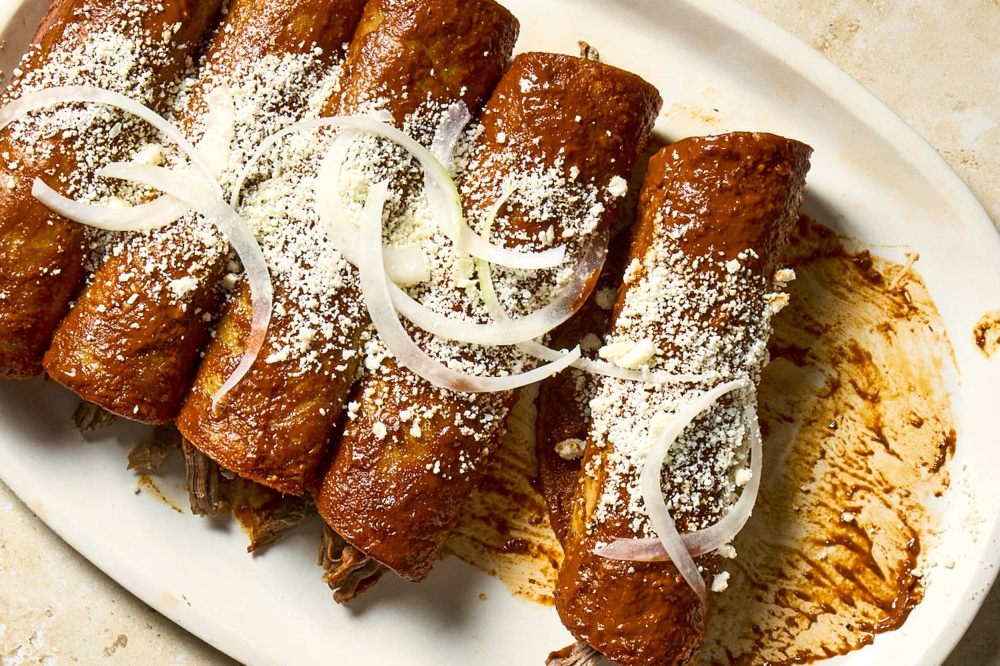

Enchiladas

Description
A Mexican dish of rolled corn tortillas filled with a variety of ingredients and covered with a savory sauce.
Ingredients
- Tortillas
- Any Meat
- Beans
- Cheese
- Sauce
- Vegetables
Steps
- Gather the ingredients.
- Warm 3/4 cup oil over very low heat in a heat-proof shallow dish or skillet. You want it very warm but not burning hot.
- Keep another heat-proof dish or skillet over low heat to keep the 14 corn tortillas warm.
- Dip each tortilla in the warm oil for 5 to 8 seconds until the tortilla is warmed through and pliable.
- Set aside in the warming pan so they stay warm until you're ready to use them.
- Put 2 1/2 cups of homemade or purchased enchilada sauce in a shallow dish or bowl so that you can easily dip the tortillas in it.
- Take 1 tortilla and carefully dip it into the sauce until it is thoroughly coated.
- Do the same with all the tortillas.
- Lay the sauce-coated tortilla in the bottom of a 9- by 13-inch baking dish. Place 2 to 3 tablespoons of cheese or your filling of choice down the middle. If you've used a chicken or beef filling, top that with shredded cheese.
- Fold one side over, then the other side.
- Turn the enchilada over, seam side down, so the tortilla stays closed, and place it in the baking dish.
- Repeat with each tortilla until you have filled the dish. Depending on the amount of filling of used and the size of the tortillas, you will use between 10 and 14 tortillas.
- Pour the remaining sauce evenly over all of the enchiladas in the baking dish.
- Sprinkle any remaining cheese over the top of the enchiladas in the baking dish.
- Heat the oven to 350 F. Bake for 20 to 30 minutes or until the cheese is melted and bubbly.
- If you can, let the enchiladas sit for 10 minutes to cool down before serving. Accompany them with a lettuce and tomato salad with crumbled Cojita cheese (the Mexican version of Parmesan cheese), guacamole, Mexican yellow rice, and refried beans. Serve and enjoy!
Home